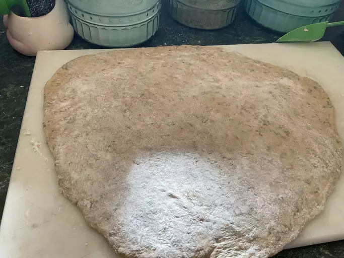

Pizza dough Recipe
This thin-crust pizza dough recipe is ready to bake in just 15 minutes with
deliciously crisp results.

Ingredients
- Yeast
- Sugar and water
- Flour
- Salt
Steps
Here's a very brief overview of what you can expect when you make homemade lasagna:
- Activate the yeast with sugar and water.
- Make the dough.
- Knead the dough
- Roll the dough into a circle.